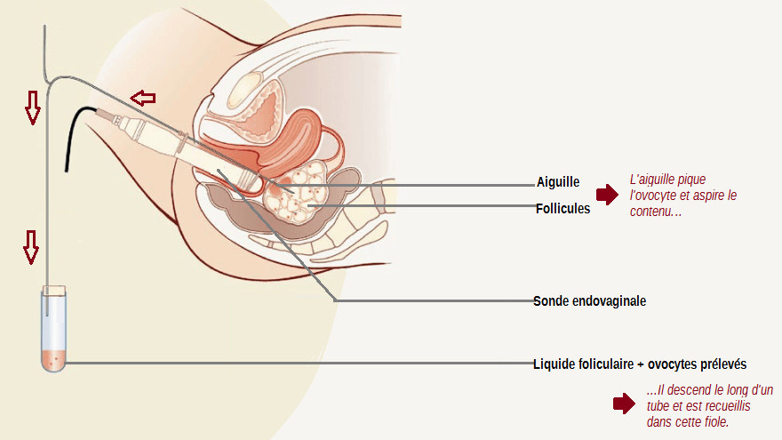
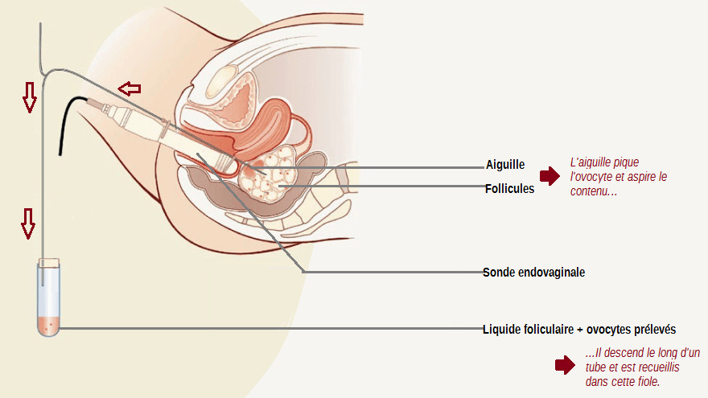

La Procréation Médicalement Assistée regroupe différentes méthodes permettant de remédier à plusieurs causes d'infertilité : on peut citer la fécondation in vitro, l'insémination artificielle, etc... Cet article récapitule les principales techniques de PMA.
L'insémination Artificielle L'insémination Artificielle
L'insémination artificielle consiste à introduire directement dans l'utérus de la femme des
spermatozoïdes afin de faciliter la fécondation.
Elle peut être pratiquée selon deux méthodes :
L'insémination intra-utérine où le sperme est directement introduit dans l'utérus à l'aide d'une seringue.
L'insémination intra-cervicale où on utilise un cathéter (tube très fin) que l'on fait passer dans les voies génitales jusqu’à l'embouchure du col de l'utérus et dans lequel on fait passer des spermatozoïdes. (il n'est donc pas nécessaire d'introduire une seringue directement à l'intérieur du corps de la femme.) Cependant cette méthode est moins pratiquée car elle a moins de chance d'aboutir.
Pour pratiquer une insémination artificielle, on vérifie dans un premier temps que les ovules produits par la femme sont de bonne qualité : un médecin surveille l'hormone lutéinisante et indique le moment de l'ovulation, propice à l'insémination.
Mais si la femme présente des troubles de l'ovulation tels que l'annulovulation ou la dysovulation, (absence d'ovulation ou ovulation rare et ovocytes de mauvaise qualité) elle doit avoir recours à la stimulation ovarienne.
Deux jours après que le moment de l'ovulation ait été détecté, les cellules reproductrices masculines doivent être recueillies. Suite à la masturbation, on récupère le sperme de l'homme qui est ensuite préparé et analysé par des biologistes. Les spermatozoïdes les plus mobiles sont choisis afin d'optimiser les chances de réussites de l'intervention.
Au moment de l'intervention, les spermatozoïdes sont placés dans une seringue et apportés dans la salle d'insémination ; ils peuvent être frais ou congelés.
On relie un cathéter à l’extrémité de la seringue et on dépose ainsi environ un millilitre de sperme à l'intérieur de la cavité utérine.
La femme est inséminée dans les 36 heures qui suivent l'ovulation et doit rester allongée 20 à 30 minutes après l'opération ; elle peut ensuite reprendre le cours normal de sa journée et de ses activités.
L'insémination artificielle peut également être réalisée à partir du sperme d'un donneur anonyme. Ce sperme est recueilli par le Centre d’Étude et de Conservation des Oeufs et du Sperme (CECOS) puis congelé. Les donneurs doivent être des hommes majeurs de moins de 45 ans en bonne santé.
Elle peut être pratiquée selon deux méthodes :
L'insémination intra-utérine où le sperme est directement introduit dans l'utérus à l'aide d'une seringue.
L'insémination intra-cervicale où on utilise un cathéter (tube très fin) que l'on fait passer dans les voies génitales jusqu’à l'embouchure du col de l'utérus et dans lequel on fait passer des spermatozoïdes. (il n'est donc pas nécessaire d'introduire une seringue directement à l'intérieur du corps de la femme.) Cependant cette méthode est moins pratiquée car elle a moins de chance d'aboutir.
Pour pratiquer une insémination artificielle, on vérifie dans un premier temps que les ovules produits par la femme sont de bonne qualité : un médecin surveille l'hormone lutéinisante et indique le moment de l'ovulation, propice à l'insémination.
Mais si la femme présente des troubles de l'ovulation tels que l'annulovulation ou la dysovulation, (absence d'ovulation ou ovulation rare et ovocytes de mauvaise qualité) elle doit avoir recours à la stimulation ovarienne.
Deux jours après que le moment de l'ovulation ait été détecté, les cellules reproductrices masculines doivent être recueillies. Suite à la masturbation, on récupère le sperme de l'homme qui est ensuite préparé et analysé par des biologistes. Les spermatozoïdes les plus mobiles sont choisis afin d'optimiser les chances de réussites de l'intervention.
Au moment de l'intervention, les spermatozoïdes sont placés dans une seringue et apportés dans la salle d'insémination ; ils peuvent être frais ou congelés.
On relie un cathéter à l’extrémité de la seringue et on dépose ainsi environ un millilitre de sperme à l'intérieur de la cavité utérine.
La femme est inséminée dans les 36 heures qui suivent l'ovulation et doit rester allongée 20 à 30 minutes après l'opération ; elle peut ensuite reprendre le cours normal de sa journée et de ses activités.
L'insémination artificielle peut également être réalisée à partir du sperme d'un donneur anonyme. Ce sperme est recueilli par le Centre d’Étude et de Conservation des Oeufs et du Sperme (CECOS) puis congelé. Les donneurs doivent être des hommes majeurs de moins de 45 ans en bonne santé.
La Fécondation In Vitro La Fécondation In Vitro
La fécondation in-vitro (FIV) consiste à féconder un ovule avec un spermatozoïde hors de l'utérus de la
femme. En effet la rencontre d'un ovule et d'un spermatozoïde, c'est à dire la fécondation, a lieu dans une éprouvette.
L'embryon issu de cette fécondation va se développer pendant deux jours en laboratoire avant d'être implanté dans l'utérus de la mère. Les bébés nés grâce à cette technique sont surnommés « bébé-éprouvette ».
Le premier bébé-éprouvette au monde est né en 1978 en Angleterre et s'appelle Louise Brown. En France c'est en 1982 qu'Amandine, le premier bébé-éprouvette français est né.
La fécondation in-vitro se déroule en plusieurs étapes. Tout d'abord, on procède à une stimulation ovarienne, afin que la femme ne produise non pas un ovule par cycle mais plusieurs.
Ces ovocytes vont ensuite être recueillis lors d'une ponction ovocytaire :
C'est une opération qui requiert une courte hospitalisation et nécessite une anesthésie locale ou générale. Lors de l'opération, le médecin fait une échographie à la patiente ce qui lui permet de visualiser les follicules mûrs à la surface des ovaires. Il se sert ensuite d'une aiguille reliée à une sonde endovaginale ; à travers la paroi du vagin, il va « piquer » plusieurs follicules qu'il aura repérés pendant l'échographie. Le contenu de ces follicules (ovocyte + liquide folliculaire) est aspiré puis contenu dans une seringue.

Environ 5 à 10 ovocytes sont recueillis ; après la ponction les ovocytes sont examinés puis placés dans un incubateur, en attendant d'être utilisés pour la fécondation.
On procède ensuite au recueil du sperme : comme pour l'insémination artificielle, le sperme est recueilli après masturbation puis analysé, seuls les spermatozoïdes comprenant les caractéristiques propices à la fécondation d'un ovule sont sélectionnés.
On procède ensuite à la fécondation : A l'intérieur d'une éprouvette, on place un ovule au contact de 50 000 spermatozoïdes. Le tube est placé dans un incubateur qui reproduit les conditions d'un utérus pendant 24 heures afin que la fécondation ait lieu.
Il faut savoir que cette opération est reproduite avec plusieurs ovules recueillis et non un seul, afin de multiplier les chances de fécondation (en effet, il est possible que la fécondation ne s'opère pas du tout sur certains ovules) et d'obtenir plusieurs embryons en cas d'échec du développement de l'un d'eux.
Une fois un des ovules fécondé, il devient une cellule œuf puis commence à se diviser : un embryon se forme. Au deuxième jour après la fécondation, l'embryon comporte deux à quatre cellules, au troisième jour, il en comporte quatre à huit ; c'est à ce moment là que l'embryon peut être transféré dans l'utérus.
Le transfert est indolore et à lieu sous contrôle échographique. On fait passer un cathéter dans les voies génitales de la femme ,jusque dans l'utérus, relié à une seringue (comme lors d'une insémination artificielle intra-cervicale) et on injecte l'embryon. Selon l'avis du médecin, plusieurs embryons peuvent être injectés afin d'augmenter les chances de réussite de la FIV .
Ce dernier va « s'accrocher » à la paroi utérine : c'est la nidation et va se développer jusqu'à l'accouchement.
Enfin, afin de déterminer la réussite de l'opération, on effectue un « contrôle HCG ».
L'hormone HCG est une hormone secrétée par le placenta et détectable dans le sang à partir du dixième jour de la grossesse. La mesure du taux de HCG dans le sang permet notamment de vérifier si la fécondation a bien fonctionné et si la grossesse se déroule bien. Grâce à ces mesures, on peut par exemple détecter une fausse couche ou savoir si l'embryon est atteint de trisomie 21.
L'embryon issu de cette fécondation va se développer pendant deux jours en laboratoire avant d'être implanté dans l'utérus de la mère. Les bébés nés grâce à cette technique sont surnommés « bébé-éprouvette ».
Le premier bébé-éprouvette au monde est né en 1978 en Angleterre et s'appelle Louise Brown. En France c'est en 1982 qu'Amandine, le premier bébé-éprouvette français est né.
La fécondation in-vitro se déroule en plusieurs étapes. Tout d'abord, on procède à une stimulation ovarienne, afin que la femme ne produise non pas un ovule par cycle mais plusieurs.
Ces ovocytes vont ensuite être recueillis lors d'une ponction ovocytaire :
C'est une opération qui requiert une courte hospitalisation et nécessite une anesthésie locale ou générale. Lors de l'opération, le médecin fait une échographie à la patiente ce qui lui permet de visualiser les follicules mûrs à la surface des ovaires. Il se sert ensuite d'une aiguille reliée à une sonde endovaginale ; à travers la paroi du vagin, il va « piquer » plusieurs follicules qu'il aura repérés pendant l'échographie. Le contenu de ces follicules (ovocyte + liquide folliculaire) est aspiré puis contenu dans une seringue.

Environ 5 à 10 ovocytes sont recueillis ; après la ponction les ovocytes sont examinés puis placés dans un incubateur, en attendant d'être utilisés pour la fécondation.
On procède ensuite au recueil du sperme : comme pour l'insémination artificielle, le sperme est recueilli après masturbation puis analysé, seuls les spermatozoïdes comprenant les caractéristiques propices à la fécondation d'un ovule sont sélectionnés.
On procède ensuite à la fécondation : A l'intérieur d'une éprouvette, on place un ovule au contact de 50 000 spermatozoïdes. Le tube est placé dans un incubateur qui reproduit les conditions d'un utérus pendant 24 heures afin que la fécondation ait lieu.
Il faut savoir que cette opération est reproduite avec plusieurs ovules recueillis et non un seul, afin de multiplier les chances de fécondation (en effet, il est possible que la fécondation ne s'opère pas du tout sur certains ovules) et d'obtenir plusieurs embryons en cas d'échec du développement de l'un d'eux.
Une fois un des ovules fécondé, il devient une cellule œuf puis commence à se diviser : un embryon se forme. Au deuxième jour après la fécondation, l'embryon comporte deux à quatre cellules, au troisième jour, il en comporte quatre à huit ; c'est à ce moment là que l'embryon peut être transféré dans l'utérus.
Le transfert est indolore et à lieu sous contrôle échographique. On fait passer un cathéter dans les voies génitales de la femme ,jusque dans l'utérus, relié à une seringue (comme lors d'une insémination artificielle intra-cervicale) et on injecte l'embryon. Selon l'avis du médecin, plusieurs embryons peuvent être injectés afin d'augmenter les chances de réussite de la FIV .
Ce dernier va « s'accrocher » à la paroi utérine : c'est la nidation et va se développer jusqu'à l'accouchement.
Enfin, afin de déterminer la réussite de l'opération, on effectue un « contrôle HCG ».
L'hormone HCG est une hormone secrétée par le placenta et détectable dans le sang à partir du dixième jour de la grossesse. La mesure du taux de HCG dans le sang permet notamment de vérifier si la fécondation a bien fonctionné et si la grossesse se déroule bien. Grâce à ces mesures, on peut par exemple détecter une fausse couche ou savoir si l'embryon est atteint de trisomie 21.
La FIV avec Injection Intra-Cytoplasmique de Spermatozoïdes La FIV avec Injection Intra-Cytoplasmique de Spermatozoïdes
La Fécondation In Vitro avec ICSI consiste à injecter directement chaque spermatozoïde, auquel on aura préalablement retiré
son flagelle, dans un ovocyte, ce qui diffère de la FIV classique pour laquelle les spermatozoïdes sont mis
dans une boîte de culture et viennent spontanément au contact de l’ovocyte. Cette méthode, de nos jours très
courante, est principalement réservée aux cas de stérilité masculine, pour laquelle la qualité des spermatozoïdes
ne permet pas toujours d’espérer l’obtention d’embryon en Fécondation In Vitro classique.
Les ovocytes sont extraits par aspiration, puis le biologiste procède à une « décoronisation » : il s’agit d’enlever la couronne cellulaire entourant les ovocytes afin de mieux identifier l’endroit où doit se faire la micro-injection. Afin d’augmenter les chances de réussite, les ovocytes utilisés sont les plus matures, et les spermatozoïdes injectés sont les plus mobiles.
L’ovocyte est fermement maintenu grâce à une pipette de contention, et le spermatozoïde est aspiré, puis injecté dans l’ovocyte avec une pipette d’injection. Ce geste se fait sous observation avec un microscope très puissant, et chaque ovocyte est ainsi fécondé. Après cela, les ovocytes sont mis dans une boîte de culture et les étapes qui suivent sont exactement les mêmes que pour une fécondation in vitro classique : 2 à 5 jours après l’injection de chaque spermatozoïde dans un ovule, ceux-ci se transforment en embryons, prêts à être injectés dans l’utérus. Deux d’entre eux sont sélectionnés puis introduits par fin cathéter, au fond de l’utérus.
Parfois, le sperme peut ne pas contenir de spermatozoïdes. L’homme a alors la possibilité de recourir à un prélèvement chirurgical de spermatozoïdes, qui peut avoir lieu le jour du prélèvement des ovocytes, ou avant, mais dans ce cas, les spermatozoïdes seront congelés. De plus, comme pour toute méthode de PMA, le couple peut toujours avoir recours à un don de spermatozoïdes ou d’ovocytes, si les gamètes ne sont pas exploitables.
Tout comme pour la Fécondation In Vitro classique, la Sécurité Sociale prend en charge 4 cycles de ponction ovarienne.
Son taux de réussite pour obtenir, grâce à cette méthode, une grossesse, est de l’ordre d’environ 30%.
Les ovocytes sont extraits par aspiration, puis le biologiste procède à une « décoronisation » : il s’agit d’enlever la couronne cellulaire entourant les ovocytes afin de mieux identifier l’endroit où doit se faire la micro-injection. Afin d’augmenter les chances de réussite, les ovocytes utilisés sont les plus matures, et les spermatozoïdes injectés sont les plus mobiles.
L’ovocyte est fermement maintenu grâce à une pipette de contention, et le spermatozoïde est aspiré, puis injecté dans l’ovocyte avec une pipette d’injection. Ce geste se fait sous observation avec un microscope très puissant, et chaque ovocyte est ainsi fécondé. Après cela, les ovocytes sont mis dans une boîte de culture et les étapes qui suivent sont exactement les mêmes que pour une fécondation in vitro classique : 2 à 5 jours après l’injection de chaque spermatozoïde dans un ovule, ceux-ci se transforment en embryons, prêts à être injectés dans l’utérus. Deux d’entre eux sont sélectionnés puis introduits par fin cathéter, au fond de l’utérus.
Parfois, le sperme peut ne pas contenir de spermatozoïdes. L’homme a alors la possibilité de recourir à un prélèvement chirurgical de spermatozoïdes, qui peut avoir lieu le jour du prélèvement des ovocytes, ou avant, mais dans ce cas, les spermatozoïdes seront congelés. De plus, comme pour toute méthode de PMA, le couple peut toujours avoir recours à un don de spermatozoïdes ou d’ovocytes, si les gamètes ne sont pas exploitables.
Tout comme pour la Fécondation In Vitro classique, la Sécurité Sociale prend en charge 4 cycles de ponction ovarienne.
Son taux de réussite pour obtenir, grâce à cette méthode, une grossesse, est de l’ordre d’environ 30%.
Le don et l'accueil d'embryons Le don et l'accueil d'embryons
Parfois, des couples qui ont eu recours à une tentative de FIV et qui ne possèdent plus de projet parental ont congelé leurs embryons ; la congélation
a pour but de conserver les embryons qui ne sont pas transférés immédiatement dans l’utérus après une FIV. Après décongélation, ces embryons peuvent être
placés directement dans l’utérus de la femme. Cependant, il faut savoir que certains embryons peuvent parfois ne pas résister à la congélation.
Le don d'embryons :
Lorsqu’un couple ne possède plus de projet parental car les tentatives de FIV ont pu aboutir à une naissance, 3 choix s’offrent à lui concernant le futur des embryons.
Ils peuvent arrêter la conservation des embryons congelés (ce qui est fait automatiquement lorsque le couple ne donne pas d’avis sur le devenir de ses embryons, conservés depuis plus de cinq ans), donner les embryons congelés à un autre couple afin de leur permettre d’avoir à leur tour un enfant, ou alors, ils peuvent donner les embryons congelés à la recherche scientifique.
Les donneurs doivent avoir au maximum 38 ans pour les femmes, et jusqu’à 45 ans pour les hommes, et ne doivent pas porter de risque de maladie transmissible. Ces couples, ne peuvent pas, selon le principe d’anonymat, donner leurs embryons à un couple qu’il connaît.
L'accueil d'embryons
Les couples qui peuvent bénéficier d’un accueil d’embryon, c'est-à-dire d’un transfert d’embryons congelés donné par un autre couple, sont ceux qui présentent une double infertilité ou des risques de transmettre une maladie génétique à l’enfant.
Pour le cas de l’accueil d’embryon, il y a trois principes dictés par la loi française à respecter : l’anonymat (les donneurs ne pourront jamais connaître l’identité des receveurs, et inversement), la gratuité (l’accueil d’embryons est totalement gratuit) et le volontariat (signature d’un consentement).
Cependant, lorsqu’un couple veut avoir recours à un transfert d’embryon, on tient compte de certains critères ethniques des donneurs et des receveurs tels que la couleur de la peau. De plus, si la santé d’un enfant né grâce à cette technique est en danger, les médecins peuvent tout de même avoir accès aux données médicales du couple donneur. Cet enfant né grâce à cette méthode est légalement celui du couple receveur, et il ne pourra jamais connaître l’identité des donneurs.
Le transfert se déroule ainsi : à l’aide d’un cathéter, 1 à 3 embryons des donneurs sont introduits dans l’utérus par voie vaginale. Il s’agit d’un geste simple, qui se fait sous échographie. Ce transfert, pour laquelle la femme se trouve en position gynécologique, ne nécessite pas d’anesthésie. Suite à cela, la femme doit rester au repos pendant quelques minutes, mais elle pourra ensuite reprendre toute activité.
Cette méthode est le dernier recours pour donner la vie : elle ne peut être pratiquée qu’à la seule condition d’échec ou d’impossibilité de toutes les autres méthodes de PMA.
Selon l’INSEE, la part des enfants nés grâce à un transfert d’embryon en 2010 représente seulement 0,1% des enfants nés grâce à une technique de PMA durant l’année. Ainsi, cela montre que les couples ayant recours à cette méthode sont peu nombreux.
Le don d'embryons :
Lorsqu’un couple ne possède plus de projet parental car les tentatives de FIV ont pu aboutir à une naissance, 3 choix s’offrent à lui concernant le futur des embryons.
Ils peuvent arrêter la conservation des embryons congelés (ce qui est fait automatiquement lorsque le couple ne donne pas d’avis sur le devenir de ses embryons, conservés depuis plus de cinq ans), donner les embryons congelés à un autre couple afin de leur permettre d’avoir à leur tour un enfant, ou alors, ils peuvent donner les embryons congelés à la recherche scientifique.
Les donneurs doivent avoir au maximum 38 ans pour les femmes, et jusqu’à 45 ans pour les hommes, et ne doivent pas porter de risque de maladie transmissible. Ces couples, ne peuvent pas, selon le principe d’anonymat, donner leurs embryons à un couple qu’il connaît.
L'accueil d'embryons
Les couples qui peuvent bénéficier d’un accueil d’embryon, c'est-à-dire d’un transfert d’embryons congelés donné par un autre couple, sont ceux qui présentent une double infertilité ou des risques de transmettre une maladie génétique à l’enfant.
Pour le cas de l’accueil d’embryon, il y a trois principes dictés par la loi française à respecter : l’anonymat (les donneurs ne pourront jamais connaître l’identité des receveurs, et inversement), la gratuité (l’accueil d’embryons est totalement gratuit) et le volontariat (signature d’un consentement).
Cependant, lorsqu’un couple veut avoir recours à un transfert d’embryon, on tient compte de certains critères ethniques des donneurs et des receveurs tels que la couleur de la peau. De plus, si la santé d’un enfant né grâce à cette technique est en danger, les médecins peuvent tout de même avoir accès aux données médicales du couple donneur. Cet enfant né grâce à cette méthode est légalement celui du couple receveur, et il ne pourra jamais connaître l’identité des donneurs.
Le transfert se déroule ainsi : à l’aide d’un cathéter, 1 à 3 embryons des donneurs sont introduits dans l’utérus par voie vaginale. Il s’agit d’un geste simple, qui se fait sous échographie. Ce transfert, pour laquelle la femme se trouve en position gynécologique, ne nécessite pas d’anesthésie. Suite à cela, la femme doit rester au repos pendant quelques minutes, mais elle pourra ensuite reprendre toute activité.
Cette méthode est le dernier recours pour donner la vie : elle ne peut être pratiquée qu’à la seule condition d’échec ou d’impossibilité de toutes les autres méthodes de PMA.
Selon l’INSEE, la part des enfants nés grâce à un transfert d’embryon en 2010 représente seulement 0,1% des enfants nés grâce à une technique de PMA durant l’année. Ainsi, cela montre que les couples ayant recours à cette méthode sont peu nombreux.